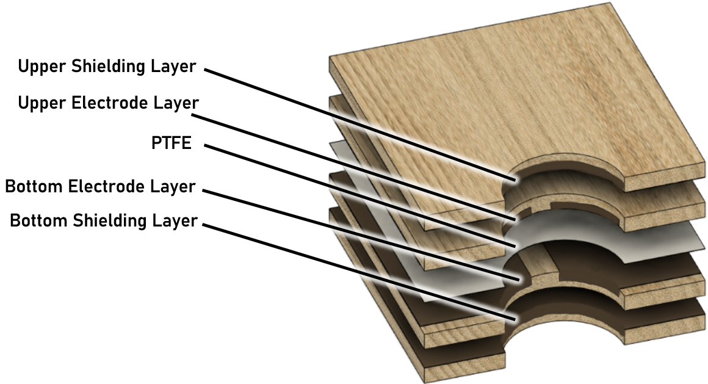
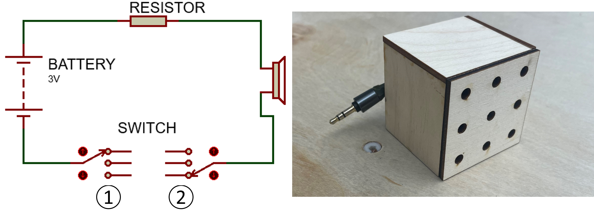

Overview
WooDowel is an interdisciplinary research project exploring how natural wood can become an interactive sensing medium.
The work investigates electrode isolation and electromagnetic shielding in triboelectric plywood sensors —
a method enabling stable, noise-resistant signal acquisition even when the electrodes overlap inside multi-layered wood panels.
The project was presented at CHI 2024 (Conference on Human Factors in Computing Systems),
the world’s leading venue for human–computer interaction research.

Technical Approach
The WooDowel system builds upon triboelectric nanogenerator (TENG) principles —
converting mechanical vibrations into electrical signals via the triboelectric effect.
Our key contribution was redesigning the plywood structure to balance signal sensitivity,
EM shielding, and structural durability.

Each sensor layer consists of copper electrodes overlapping across a PTFE triboelectric film,
sandwiched between grounded EM-shielding layers.
These layers are interconnected through 3D-printed conductive dowels that
act as modular switches — woodworkers can “turn off” damaged regions by replacing a conductive dowel
with a wooden one. This preserves most of the sensor’s area and prevents short circuits.

To improve usability, we integrated a short-circuit detector — a small buzzer module that
alerts users when a nail or screw causes a short.
This makes WooDowel more practical for real woodworking environments.

We also investigated how material types (hardwood, softwood, MDF) and panel thickness affect
signal strength. Results showed hardwood plywood yielded the highest output voltage and
stable sensing performance across common household activities such as writing, sawing,
and drilling — even with nearby electronic interference.
Reflection
As a computer science student, hardware prototyping and wood-based sensing were far from my comfort zone.
Thanks to the patience and guidance of my mentors and lab members, I gradually learned how to merge software algorithms with physical material design.
Each debugging session — from writing Python classification scripts to Using machine tools to produce wood panel materials — deepened my understanding of what it means to
bridge computation and the real world.
Acknowledgements
Special thanks to my supervisors and collaborators —
Dr. Teyen Wu, Dr. Xingdong Yang, Dr. Yuning Su, and Dr. Yonghao Shi (names are listed in alphabetical order, without implying any priority) —
for their incredible support and mentorship.
Their guidance not only helped me understand complex physical concepts, but also showed me
how collaborative research brings ideas to life across disciplines.